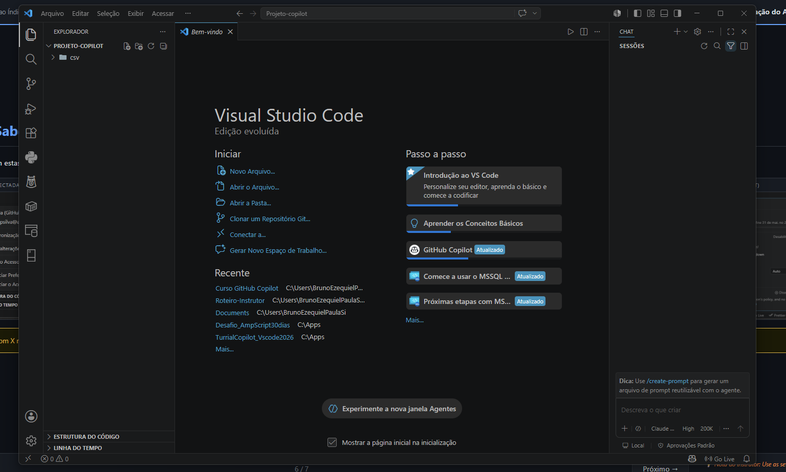
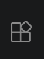
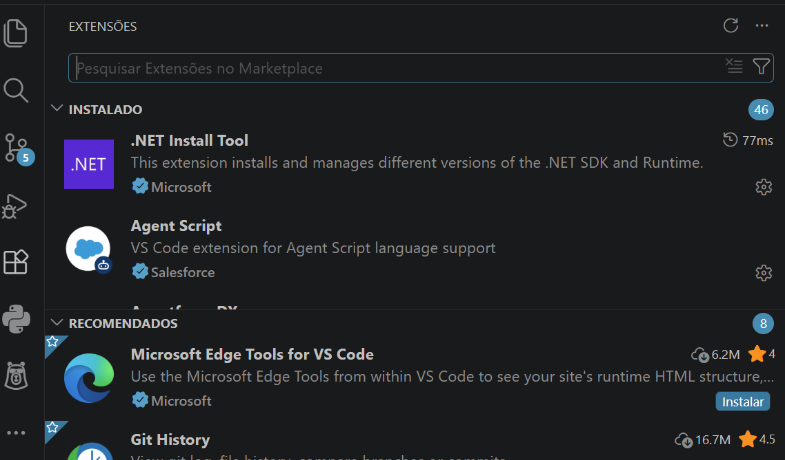
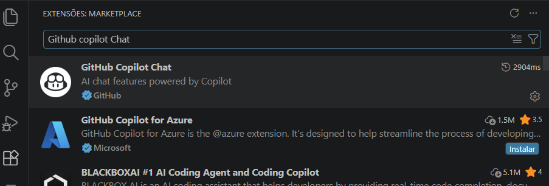
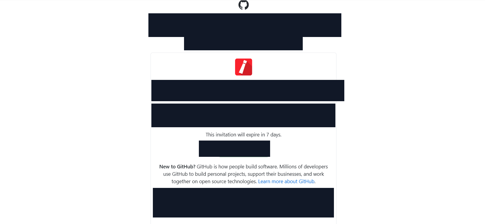
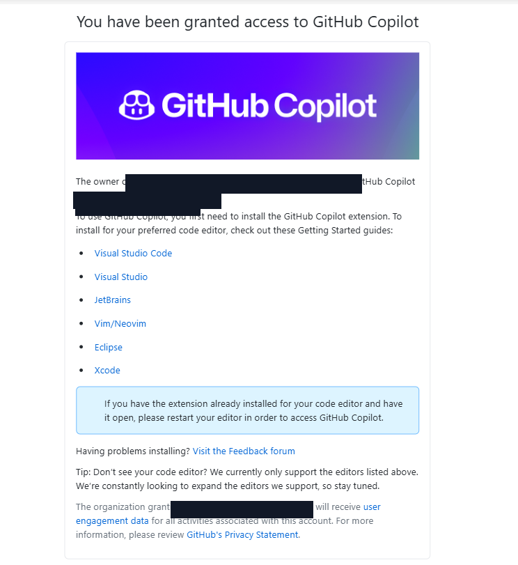
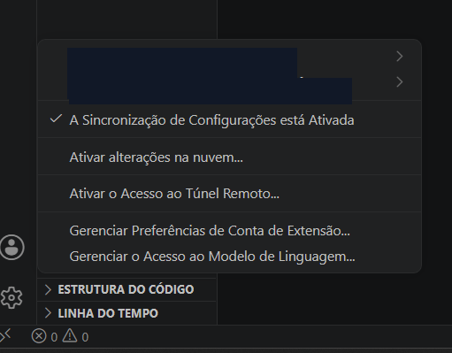
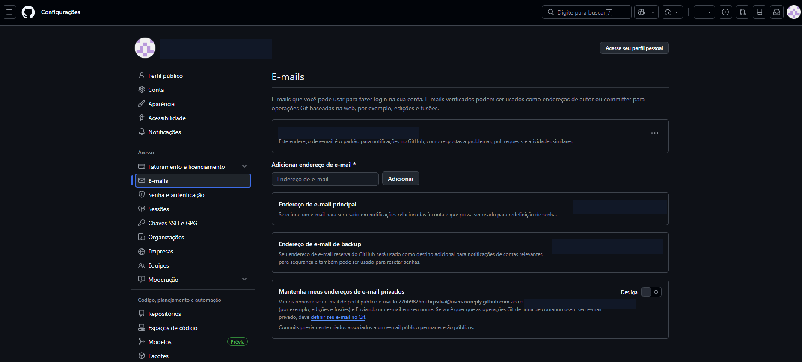
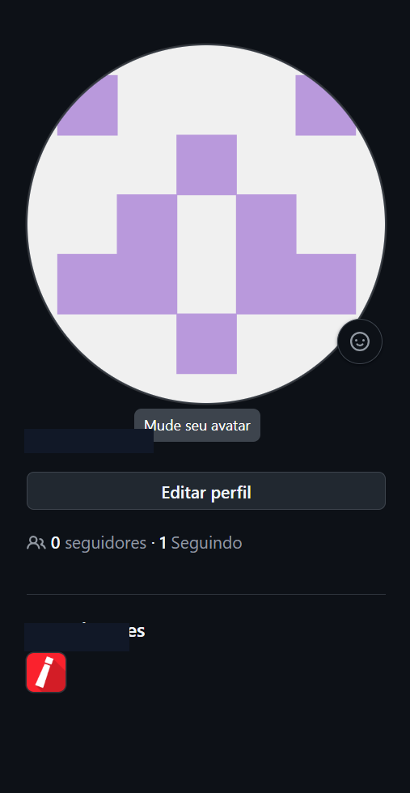
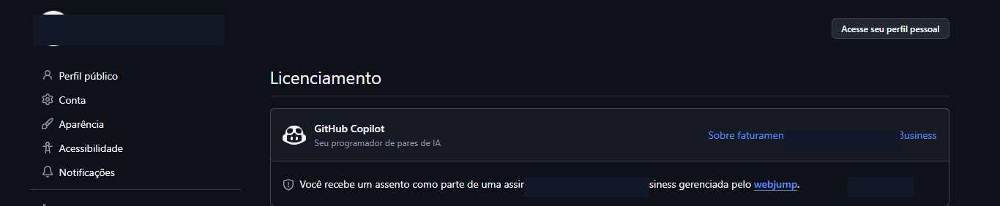

Vamos instalar tudo e fazer o primeiro teste com o Copilot
- VS Code instalado no seu computador
- Extensões do GitHub Copilot instaladas
- Conta da organização da empresa conectada e funcionando
- Feito o seu primeiro pedido ao Copilot
🖥️ O que é o VS Code?
É o escritório digital onde você vai trabalhar junto com o GitHub Copilot. Pense nele como um bloco de notas muito mais inteligente.

Seus Arquivos
Acesse todos os arquivos do seu projeto na barra lateral
Editor Principal
Onde você escreve textos, cria planilhas e vê sugestões da IA
Chat com Copilot
Converse com a IA em português — pergunte, peça, crie!
⬇️ Como Instalar o VS Code
Vamos instalar o VS Code passo a passo — leva menos de 5 minutos:
Acesse o site oficial
Abra o navegador e acesse: code.visualstudio.com
Clique em "Download for Windows"
O botão grande azul já detecta seu sistema automaticamente
Execute o instalador
Abra o arquivo .exe baixado e clique em "Avançar" em todas as telas
Marque "Adicionar ao PATH"
Durante a instalação, deixe essa opção marcada — facilita muito o uso futuro
Abra o VS Code
Procure por VS Code no menu Iniciar e abra o programa
🧩 Instalando as Extensões do Copilot
Agora vamos adicionar os "superpoderes" ao VS Code — as extensões do GitHub Copilot:
Clique no ícone de extensões
Na barra lateral esquerda, clique no ícone de peças de quebra-cabeça 🧩 (ou pressione Ctrl+Shift+X)

Este é o botão de Extensões na barra lateral esquerda do VS Code.Instale a primeira extensão
Pesquise por "GitHub Copilot" e clique em Instalar
Instale a segunda extensão
Pesquise por "GitHub Copilot Chat" e clique em Instalar


🔑 Conectando sua Conta Corporativa
Use a conta do github.com que recebeu o convite da organização da empresa — ela tem a licença Copilot Business ativa.


Clique em "Sign in to GitHub" no VS Code
Ao instalar as extensões a notificação aparece — ou clique no ícone de conta no canto inferior esquerdo
Entre com a conta da organização da empresa
Use a conta github.com autorizada pela organização — é ela que tem a licença ativa
Clique em "Authorize" e volte ao VS Code
O browser abre o github.com — autorize e o login está feito!
✅ Como Saber que Está Funcionando?
Confira estes sinais no VS Code e no GitHub:
- Conta GitHub conectada no VS Code
- Perfil vinculado à organização da empresa
- Licença GitHub Copilot Business confirmada
- Contas GitHub e Microsoft conectadas, quando solicitado




🎯 Exercício — Seu Primeiro Pedido ao Copilot!
Vamos testar tudo agora. Siga o passo a passo:
Abra o chat do Copilot
Clique no ícone 💬 na barra lateral ou pressione Ctrl+Alt+I
Digite o seguinte pedido:
Pressione Enter e veja a mágica acontecer
O Copilot vai criar o programa automaticamente e explicar o que fez!
Parabéns! Você fez seu primeiro pedido ao GitHub Copilot!